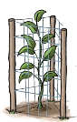

Pensar la lengua escrita
El verbo
- Indica qué expresan los verbos destacados.
Sumate, plantá un árbol.
Sé parte de la solución.
En conclusión:
cuando un hablante le ordena o le pide algo a otro, usa verbos en modo imperativo.
Guía para plantar árboles
Completa la guía para plantar árboles. Escribe los verbos de la lista en modo imperativo siguiendo el ejemplo.
1. la tierra en una superficie de unos 40 x 40 cm.
2. un hueco.

3. el árbol de la parte más baja del tallo. No lo ni la raíz.
4. que el árbol quede a ras del suelo y la raíz con tierra.
5. la tierra. No debe quedar muy apretada ni muy floja.

6. Si el suelo es pobre, abono orgánico.

7. Después de plantar, el árbol de la acción de herbívoros.